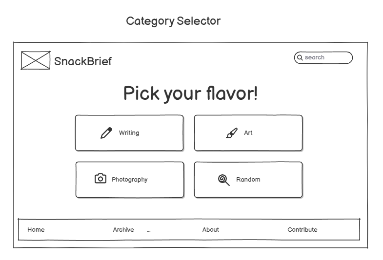
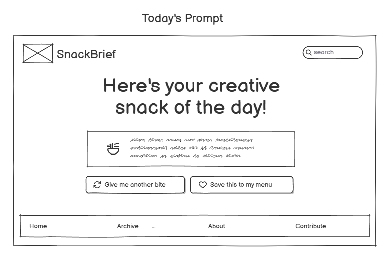
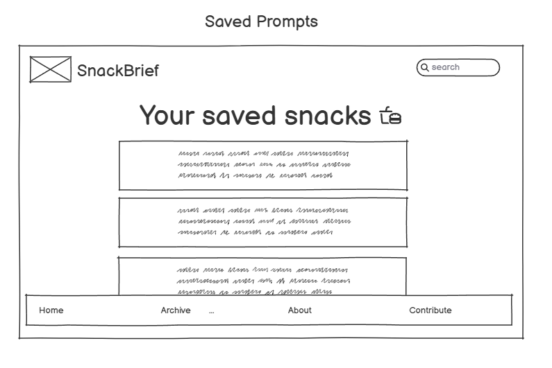
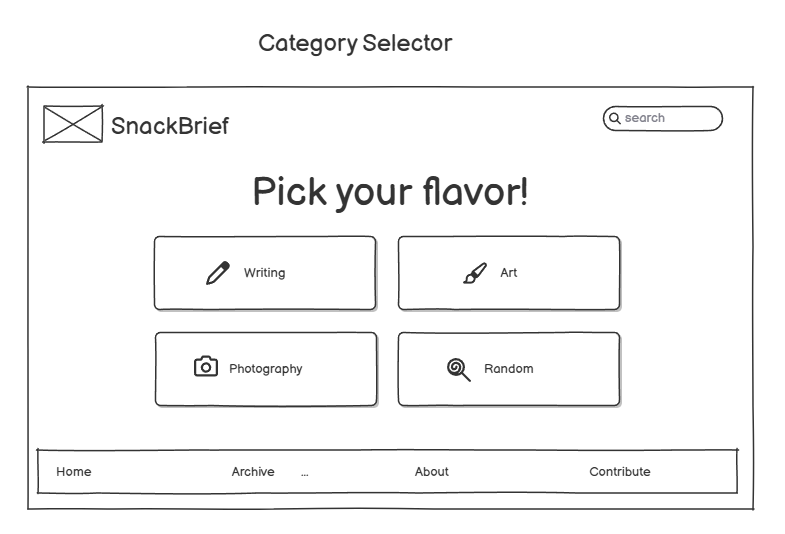
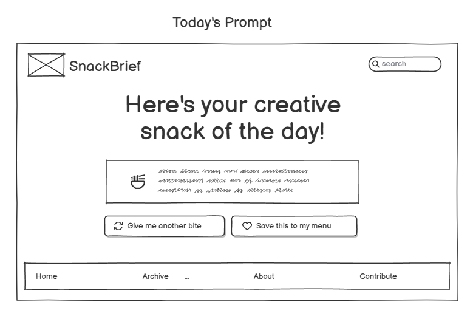
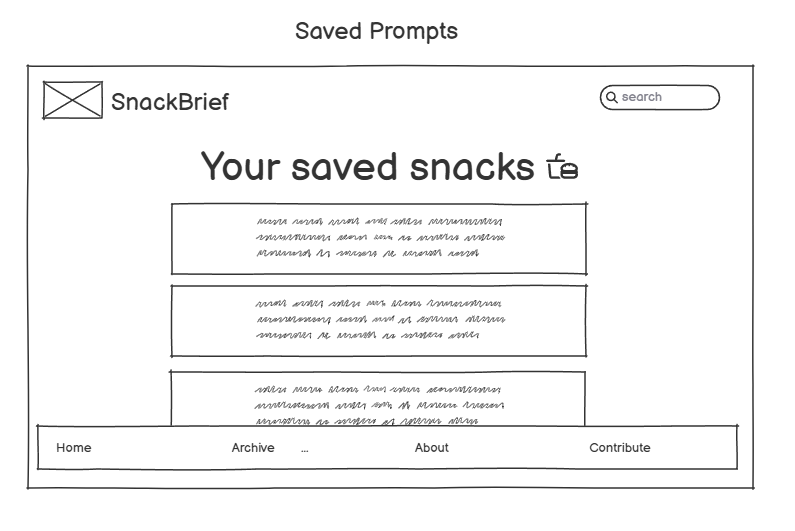

Advantages and Disadvantages of Sketching Wireframes
Advantages of sketching wireframes include speed, simplicity, and ease of collaboration. They help focus on layout ideas without worrying about aesthetics. However, they’re difficult to share, edit, or scale, and may lack the professional polish of digital wireframes.
Best Wireframing Style for My Project
For my project, low-fidelity digital wireframes work best because they combine flexibility with clarity. I can quickly adjust layouts and share them for feedback while maintaining a consistent visual structure.
Wireframe Examples
Below are images of my project’s wireframes:
 




